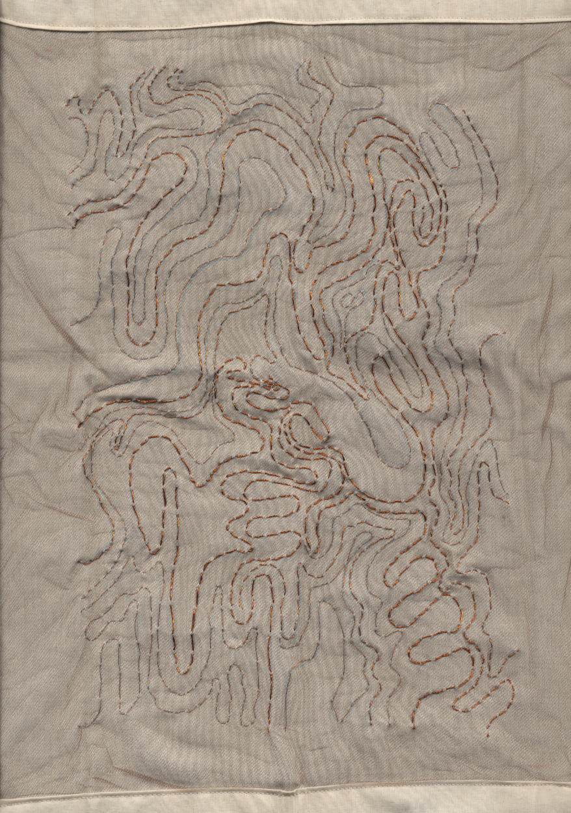

this is a map of an unknown territory, 2025.

here, copper wire of 4 thicknesses is anchored to both nylon tulle and cotton muslin. marrying the tulle with the more substantial muslin suggests that the depiction wants to ground the territory in physicality.
i worked on this in the heat of summer, trying to use it to conjure up some magic. i do think the wishes i made over these stitches altered a part of my life. things are much different now than before -- publicly -- in a way i could not have imagined for myself.
i think the veil has sort of been torn from my eyes, so to speak, and illusions i believed of myself before have been commuted to everyone who sees me. i wish i could be more specific but i'm afraid of seeming insane. maybe after some time things will be more explicable.
for now -- reports of my personhood are greatly exaggerated.
